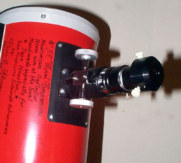

Whenever I take my Star Spectroscope out for a little stellar spin through the universe, I salute our trailblazing women scientists from the last century before I begin my observing session. Williamina Paton Fleming (1857-1911) led a team of women assistants who looked at thousands of individual spectrograms and classified each star in classes labeled A to N at Harvard College Observatory. Annie Jump Cannon (1863-1941) joined Harvard College Observatory in 1896 and classified 250,000 stars, and discovered the smooth consistent sequence from one classification to the next and rearranged the original alphabetical listing to the OBAFGKM - N arrangement used today. Be sure to read all the way to the end of this long report for the easy way to remember this classification order with a catchy well-worn phrase, which I have slightly updated to include our modern permissive societal mores as well as the new spectral subclassifications. No peeking ahead allowed! I think Williamina and Annie, were they alive today, would approve!
|  |
Here are some of the stars I've observed and a description of their spectra. This is a fascinating observational project, and a nice change of pace. Spectral lines are formed by electrons jumping between different energy levels in the atoms in the star's outer layers. Enough electrons jumping between any two energy levels of a given element will result in a spectral emission or absorption line at a characteristic wavelength. Cool stars have fewer atomic collisions and have weaker absorption lines. Hot stars are hopping with frequent atomic collisions which prevent stable molecules, and thus prevent the dark molecular bands. My two word summary of this topic: fusion happens!
O stars - sorry, no hot hot blue stars of significant magnitude were visible or of a high enough magnitude for spectral detection these nights. The three Orion belt stars are O class, so we'll observe them later in the year. What we would see if we could is ionized helium and the hydrogen lines weak but still prominent.
B stars - Zeta Sco (Dschubba), Alpha Virginis (Spica), Alpha Sag ( Nunki - chunky monkey - ok I'm writing this instead of having lunch!), Eta Uma (Alkaid), Beta Lib (Zuben Eschamali), Beta and Gamma Lyra. I wanted to do Gamma Sco (Shaula) but it was too low. The observatory side of Fremont Peak will be a better locale with that nice southern horizon! Neutral helium, with stronger hydrogen lines are present.
A stars - 4 hydrogen absorption lines (Balmer series Alpha to Delta) dominate in this class. Hydrogen beta and gamma are easy to see on both sides of the blue part. Alpha and Delta are harder to see in the red and violet part. Vega, being a hot main sequence star gives the strongest H Beta line in the blue green - a dark absorption line resulting from electron jumps from the second to fourth energy level of the neutral hydrogen atom - a.k.a. hydrogen beta. A thin magnesium line in the green part is the most distinctive of the metals, harder to see are the H and K lines of calcium in the deep purple haze of the rainbow. Vega also shows water vapor (H2O) and oxygen (O2) molecular bands in the red end of the spectrum. Epsilon and Beta UMA (Alioth and Merak), Alpha Cyg (Deneb), Xi Uma (Mizar) Alpha Libra (Zuben El Genubi), Alpha Aqu (Altair) were also observed.
F stars - Gamma Cygni (Sadr) and Eta Sco were observed. The hydrogen lines are weaker by half of the A star strength. Heavy metals are stronger - particularly ionized calcium lines at the far far end of the purple and hard to see. Iron lines show at the green/yellow border of the spectrum. Star stuff is being created!
G stars - molecular G band, B magnesium triplet and D sodium doublet. Muphred and Nekkar (Eta and Beta Boo) were the G stars observed. Well, some of us observed the setting of our own G star. A few more of us witnessed magnificent sunrise of that same GV2 in the morning - our reward for staying up all night.
K stars - Hydrogen lines are almost gone. Calcium line is strong. Some of the metal lines are very prominent. That dark thick titanium oxide band in the red is beginning to show in this class. Arcturus, a.k.a. Alpha Boo, Beta Cyg (Albireo), Dubhe in UMA
M stars - wide black titanium oxide molecular bands - Antares, a.k.a. Alpha Sco, Alpha Herc (Ras Algethi was too dim in the spectroscope to identify lines) Sigma Libra, Delta Lyra, Delta Ophiuchus. Rare S type subclass stars show strong bands of zirconium oxide and lanthanum oxide instead. Think of the planets around an S star bathed in chemically peculiar stellar winds and encrusted with cubic zirconia gems.
C subclass (including N and R) are carbon stars. Gamma Canum Venaticorum, a.k.a. La Superba, was not superb in either the eyepiece or the spectroscope, try though we might, and believe me, we tried and tried - right Akkana??! 19 Piscium - I think we were looking for 19 Virginis instead - are you as confused as I was? These have masses of overlapping spectral lines blanketing the blue end of the spectrum. A carbon star's atmosphere is a red filter!
Wolf-Rayet stars V1770 Cyg at 7.47 was visually observed, but too dim for the spectroscope to pick up (this is the star in the Crescent Neb). Hot and blue, yet show strong emission lines of nitrogen, carbon and oxygen indicating a large thich shroud of hot gas surrounding the star.
The little updated phrase? Oh Be A Fine Guy (ok, or Girl), Kiss Me! Come-on! Now! Ready? Smooch!
Or in honor of Annie and Williamina: Only Boys Accepting Feminism Get Kissed Meaningfully. Take your pick! Oh, and I didn't make this up. It was published in ASP's Mercury magazine years back!
Rainbow Optics Star Spectroscope is available from: Rainbow Optics, Jim Badura 1593 E Street Hayward, CA 94541 (510) 581-8266